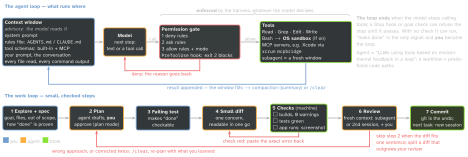

ai · folio
In one line: A coding agent is a model calling tools in a loop inside a harness that decides what each call may touch. You control the context it sees, the permissions and sandbox around it and the check it must pass: rules files advise; permission rules, hooks and sandboxes enforce; a test, build or screenshot proves.
Download PDF Print view LaTeX source


Rules files — who reads what
| file | read by · how it is found |
|---|---|
AGENTS.md | open format; Agentic AI Foundation (Linux Foundation) with MCP and goose since 9 Dec 2025; Codex, Copilot, Cursor, Gemini CLI, Jules, Zed … 20+ tools. Nearest file wins; the chat prompt overrides. |
| Codex | ~/.codex, then repo root → cwd; AGENTS.override.md first; concatenated,
closer = later; stops at 32 KiB. |
CLAUDE.md | Claude Code: managed → user → project → CLAUDE.local.md; ancestors
at launch, subdirs on demand; concatenated, none overrides; @import ≤4 hops; aim
<200 lines; .claude/rules/ by paths:; AGENTS.md only without CLAUDE.md. |
| Copilot | .github/copilot-instructions.md, *.instructions.md (applyTo); agent,
review, CLI: nearest AGENTS.md or root CLAUDE.md/GEMINI.md. |
- Context, not configuration: “never push” is a request — enforce it with a deny rule, a hook or the sandbox. A rule it keeps ignoring: the file is too long.
# AGENTS.md (Claude Code reads it when there is no CLAUDE.md)
Build: xcodebuild -scheme App build # warnings = errors
Test: xcodebuild test -scheme App -only-testing:AppTests
Stack: Swift 6 language mode; iOS 18+; SwiftUI
Rules: @MainActor view models; no force unwraps; no new deps
Done: clean build, tests green, screenshot of the screen
Never: edit .pbxproj by hand, read Secrets.xcconfig, pushContext is the budget
- The window holds system prompt, rules, tool schemas and every message, file read and command output; quality degrades as it fills. Chroma’s “context rot” (Jul 2025, 18 models): accuracy falls with input length even on simple tasks.
- One task per session,
/clearbetween; after two failed corrections, clear and re-prompt with what you learned. Give exact paths, the full error, a screenshot. - Keep exploration out: a subagent reads in its own window and returns a summary; skills and path-scoped rules load on demand. APIs newer than the training data (iOS 27 SDK, Swift 6.4): hand it the docs page.
Permissions & sandboxes
| Claude Code mode | runs without asking |
|---|---|
default (Manual) | reads only |
acceptEdits | + edits, mkdir touch mv cp in the working dirs |
plan | reads; no source edits until the plan is approved |
auto | everything; a classifier model reviews risky actions |
dontAsk | only pre-approved tools, the rest denied — CI, scripts |
bypassPermissions | everything — isolated containers / VMs only |
- Rules: deny → ask → allow, first match wins, specificity ignored:
Bash(aws *)denied beatsBash(aws s3 ls)allowed; deny holds in every mode. Enforced by the client, not the model. - Sandbox (shell only, off by default; Seatbelt, bubblewrap): writes = working dir + temp; reads include
~/.ssh,~/.awsuntil denied; network via a proxy, allow-list starts empty. File tools, MCP servers, hooks run outside it. - Codex: sandbox
read-only·workspace-write(no network) ·danger-full-access× approvalson-request·never· granular.
Failure modes → the check
- Stale or invented API, worst past the cutoff — compile, read the docs.
- Silenced symptom:
@unchecked Sendable,nonisolated(unsafe),try!, a weakened test — read the test diff first. - Plausible, unverified: demand evidence (test output, command + result, screenshot). “If you can’t verify it, don’t ship it.”
- Lost undo: checkpoints miss changes made through Bash — commit often.
- A “Never” line in
CLAUDE.mdas a security control;bypassPermissionsoutside a VM; an unread MCP server — full access, outside the sandbox.
Xcode’s agents, release by release
MCP — how tools plug in
- JSON-RPC 2.0: host → a client per server → server: tools, resources, prompts; stdio or Streamable HTTP; dated by the last breaking change.
- 2026-07-28: no
initialize, no sessions — each request carries version + capabilities; tasks, MCP Apps = extensions; Roots, Sampling, Logging deprecated. - Tools are arbitrary code execution; their descriptions are untrusted unless the server is; consent before every call.
Security — the agent is an attack surface
- Prompt injection (OWASP LLM01:2025): orders hidden in a page, issue, README, dependency or tool result; RAG and fine-tuning do not fully mitigate it.
- Hallucinated packages (USENIX Sec. 2025; 16 models, 576 000 samples): ≥5.2 % (commercial) / 21.7 % (open) of package names do not exist — 205 474 an attacker can register. Check and pin each new dependency.
What the measurements say
- 2025: +19 % time, felt 20 % faster; the 2026 follow-up leans faster, but METR calls it unreliable (developers declined no-AI tasks). Felt ≠ measured.
- SWE-bench (ICLR 2024): 2 294 GitHub issues, 12 Python repos; solved = hidden tests pass; Claude 2: 1.96 %. Verified: 500 human-checked. OpenAI dropped it (23 Feb 2026): 59.4 % of 138 audited unsolved tasks flawed, models reproduce the fixes(unverified) — public benchmarks leak into training.